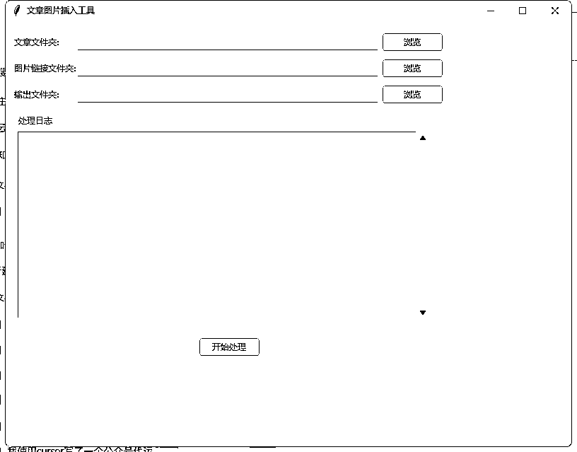

来源：https://si06f5z4e71.feishu.cn/docx/UD7vd0bajo0Z56xhirCcyB2bnZd
公众号代运营在文章中自动插入图片是一个痛点，也是我的一个痛点，通过对cursor学习以后，我实现了文章的插图和自动排版。主要是利用了两个点：
1.先将图片链接插入到txt文档中
2.将图片转换为html格式
3.在96编辑器做还原（这里主要是借鉴了猫哥的方式）
4.运行后，可以看到GUI界面，
注意每个文档是一篇文章的图片链接，然后根据文章文件名称和图片的文件名称对应匹配插入。
文末有脚本的源代码，大家自行下载使用！

import os
import random
import tkinter as tk
from tkinter import filedialog, ttk, messagebox
def insert_images_into_text(text_file_path, image_links_file_path, output_file_path):
try:
# 读取文章内容，保持原有格式
with open(text_file_path, 'r', encoding='utf-8') as f:
text_content = f.read()
# 读取图片链接并去重
with open(image_links_file_path, 'r', encoding='utf-8') as f:
image_links = []
used_links = set()
for line in f:
link = line.strip()
if link and link not in used_links:
image_links.append(link)
used_links.add(link)
# 随机选取3-5张图片
if len(image_links) > 5:
num_images = random.randint(3, 5)
image_links = random.sample(image_links, num_images)
elif len(image_links) > 3:
num_images = random.randint(3, len(image_links))
image_links = random.sample(image_links, num_images)
# 如果图片数量小于等于3，保持所有图片
# 将文章分割成段落，保持原有的换行符
paragraphs = text_content.split('\n')
# 计算插入位置
# 只计算非空段落的数量来确定图片位置
non_empty_paragraphs = [i for i, p in enumerate(paragraphs) if p.strip()]
total_paragraphs = len(non_empty_paragraphs)
total_images = len(image_links)
insert_positions = []
if total_images > 0:
step = total_paragraphs / (total_images + 1)
for i in range(total_images):
pos = non_empty_paragraphs[int(step * (i + 1))]
if pos >= len(paragraphs):
break
insert_positions.append(pos)
# 插入图片
final_content = []
image_index = 0
for i, paragraph in enumerate(paragraphs):
final_content.append(paragraph)
if i in insert_positions and image_index < len(image_links):
final_content.append('') # 图片前的空行
final_content.append(image_links[image_index])
final_content.append('') # 图片后的空行
image_index += 1
# 写入新文件
with open(output_file_path, 'w', encoding='utf-8') as f:
f.write('\n'.join(final_content))
return "success"
except Exception as e:
return f"error: {str(e)}"
class ImageInserterGUI:
def __init__(self, root):
self.root = root
self.root.title("文章图片插入工具")
self.root.geometry("800x600")
# 创建主框架
self.main_frame = ttk.Frame(root, padding="10")
self.main_frame.grid(row=0, column=0, sticky=(tk.W, tk.E, tk.N, tk.S))
# 文件夹选择区域
self.create_folder_selection()
# 日志显示区域
self.create_log_area()
# 执行按钮
self.create_execute_button()
def create_folder_selection(self):
# 文章文件夹选择
ttk.Label(self.main_frame, text="文章文件夹:").grid(row=0, column=0, sticky=tk.W, pady=5)
self.articles_path = tk.StringVar()
ttk.Entry(self.main_frame, textvariable=self.articles_path, width=60).grid(row=0, column=1, pady=5)
ttk.Button(self.main_frame, text="浏览", command=lambda: self.browse_folder(self.articles_path)).grid(row=0, column=2, padx=5, pady=5)
# 图片链接文件夹选择
ttk.Label(self.main_frame, text="图片链接文件夹:").grid(row=1, column=0, sticky=tk.W, pady=5)
self.images_path = tk.StringVar()
ttk.Entry(self.main_frame, textvariable=self.images_path, width=60).grid(row=1, column=1, pady=5)
ttk.Button(self.main_frame, text="浏览", command=lambda: self.browse_folder(self.images_path)).grid(row=1, column=2, padx=5, pady=5)
# 输出文件夹选择
ttk.Label(self.main_frame, text="输出文件夹:").grid(row=2, column=0, sticky=tk.W, pady=5)
self.output_path = tk.StringVar()
ttk.Entry(self.main_frame, textvariable=self.output_path, width=60).grid(row=2, column=1, pady=5)
ttk.Button(self.main_frame, text="浏览", command=lambda: self.browse_folder(self.output_path)).grid(row=2, column=2, padx=5, pady=5)
def create_log_area(self):
# 创建日志显示区域
log_frame = ttk.LabelFrame(self.main_frame, text="处理日志", padding="5")
log_frame.grid(row=3, column=0, columnspan=3, sticky=(tk.W, tk.E, tk.N, tk.S), pady=10)
self.log_text = tk.Text(log_frame, height=20, width=80)
self.log_text.grid(row=0, column=0, sticky=(tk.W, tk.E, tk.N, tk.S))
scrollbar = ttk.Scrollbar(log_frame, orient=tk.VERTICAL, command=self.log_text.yview)
scrollbar.grid(row=0, column=1, sticky=(tk.N, tk.S))
self.log_text['yscrollcommand'] = scrollbar.set
def create_execute_button(self):
# 创建执行按钮
ttk.Button(self.main_frame, text="开始处理", command=self.execute_process).grid(row=4, column=0, columnspan=3, pady=10)
def browse_folder(self, string_var):
folder_path = filedialog.askdirectory()
if folder_path:
string_var.set(folder_path)
def log(self, message):
self.log_text.insert(tk.END, message + "\n")
self.log_text.see(tk.END)
self.root.update()
def execute_process(self):
# 检查路径是否都已选择
if not all([self.articles_path.get(), self.images_path.get(), self.output_path.get()]):
messagebox.showerror("错误", "请选择所有必要的文件夹路径")
return
# 清空日志
self.log_text.delete(1.0, tk.END)
try:
result = match_and_insert_images(
self.articles_path.get(),
self.images_path.get(),
self.output_path.get(),
log_callback=self.log
)
messagebox.showinfo("完成", result)
except Exception as e:
messagebox.showerror("错误", str(e))
def match_and_insert_images(articles_folder, images_folder, output_folder, log_callback=print):
try:
if not os.path.exists(output_folder):
os.makedirs(output_folder)
# 获取所有文章文件
article_files = {}
log_callback("文章文件列表：")
for file in os.listdir(articles_folder):
if file.endswith('.txt'):
name = os.path.splitext(file)[0]
article_files[name] = os.path.join(articles_folder, file)
log_callback(f" - {name}")
# 获取所有图片链接文件
image_files = {}
log_callback("\n图片链接文件列表：")
for file in os.listdir(images_folder):
if file.endswith('.txt'):
name = os.path.splitext(file)[0]
image_files[name] = os.path.join(images_folder, file)
log_callback(f" - {name}")
# 显示匹配结果
log_callback("\n成功匹配的文件：")
matched_files = set(article_files.keys()) & set(image_files.keys())
for name in matched_files:
log_callback(f" - {name}")
log_callback("\n未匹配的文章文件：")
unmatched_articles = set(article_files.keys()) - set(image_files.keys())
for name in unmatched_articles:
log_callback(f" - {name}")
log_callback("\n未匹配的图片链接文件：")
unmatched_images = set(image_files.keys()) - set(article_files.keys())
for name in unmatched_images:
log_callback(f" - {name}")
# 匹配文件并处理
processed_count = 0
for name in matched_files:
output_file = os.path.join(output_folder, f"{name}.md")
# 调用原有的插入图片函数
result = insert_images_into_text(
article_files[name],
image_files[name],
output_file
)
if result == "success":
processed_count += 1
log_callback(f"成功处理: {name}")
else:
log_callback(f"处理失败: {name}, 错误: {result}")
return f"完成处理 {processed_count} 个文件"
except Exception as e:
return f"错误: {str(e)}"
if name == "__main__":
root = tk.Tk()
app = ImageInserterGUI(root)
root.mainloop()